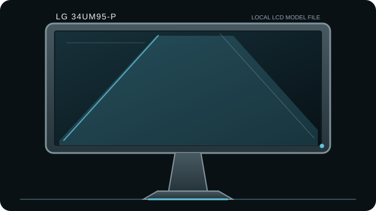

[ INDIVIDUAL COMPONENT // DISPLAYS ]
LG 34UM95-P
34-inch 21:9 UltraWide QHD IPS monitor whose original generation included Thunderbolt 2 daisy-chain ports.

IDENTIFICATION: Match the complete model and regional suffix on the rear label. This record summarizes published specifications; it is not a substitute for the exact unit manual, cable requirements or physical condition check.
Specifications
| Catalog subcategory | LCD displays |
|---|---|
| Exact product / family | LG 34UM95-P |
| Panel and native resolution | 34-inch AH-IPS LCD, 3440 × 1440 (21:9) |
| Native timing | 3440 × 1440 at up to 60 Hz |
| Inputs / companion ports | Two HDMI, DisplayPort and two Thunderbolt 2 ports; USB hub and audio out |
| Revision and model distinction | Confirm exact regional suffix (including -P) and compare the manual to the rear label. Do not transfer specifications from later 34UM95C or other UltraWide revisions. Thunderbolt daisy-chain behavior depends on host generation and drivers. |
Host compatibility and connection notes
HDMI and DisplayPort can accept video from compatible sources; Thunderbolt video/data use requires a Thunderbolt-capable host, cable and OS. Thunderbolt 2 is not USB-C and a USB-C-shaped adapter does not convert it to USB-C DisplayPort Alt Mode.
Use the correct aspect ratio and 3440 × 1440 timing; older GPUs, docks and HDMI paths may cap refresh/resolution. Some legacy Thunderbolt driver support is OS-version dependent.
Preservation notes
Record the rear-label model, serial/date code, included stand/accessories, tested input, source timing, image condition and calibration state. Keep the matching manual and cable/adaptor chain with the unit; use qualified service procedures for internal work.
Manufacturer documentation and sources
- LG UK — 34UM95-P product specificationsManufacturer product reference for the UM95 generation.
- TFTCentral — LG 34UM95 reviewIndependent review with connectivity and monitor behavior.